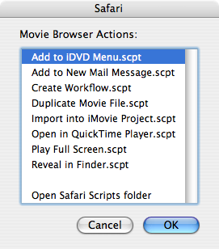
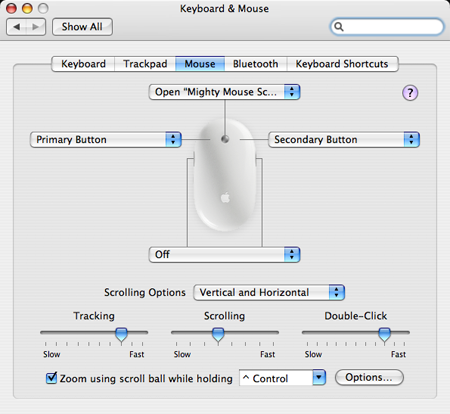

The Mighty Mouse Script Menu
The Mighty Mouse Script Menu utility will present a list of the items in the user's Scripts folder for the frontmost application when a pre-determined mouse control is activated.

Installation
Download the utility, and place it in the Applications > AppleScript folder.
To use this utility, open the Keyboard & Mouse preference pane, click the Mouse tab, and choose Other... from one of the popup menus for a specific mouse control. In the forthcoming choose dialog sheet, select this application. Close the System Preference application.

Once the control preference has been set, a menu of whatever items exist in the Scripts folder for the frontmost application will appear when the control is activated. To run a script, select it in the list and click the dialog's OK button.